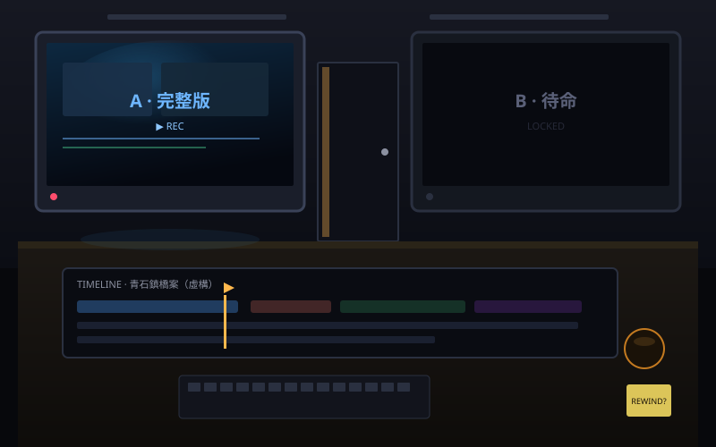
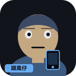

門縫漏著螢幕光。裡面有人剛走——時間軸還開著，兩台監看機還燙手。


你剛看完「完整版」。熱搜缺口還開著。要送嗎？
判斷已鎖定。燈光突然好暖。牆開始刷：早就知道了。
……等等。你答對的是哪一版？
空席很安靜，是因為嘴被剪掉了。
看右邊——反對發言還在。聽完這段再蓋章。
今晚這三刀，帶著你走完一輪。羞恥可收藏。不收藏，下次還會踩。
去濾鏡機｜先騙你一次｜夜間剪接室 v5【虛構情境】青石鎮、人物與對白皆創作，不是真實新聞。影音為自製紀錄風格短片（v5 · Ink plates · 2026-10-07），無第三方肖像。